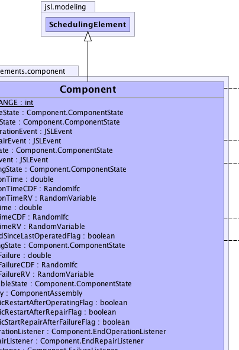
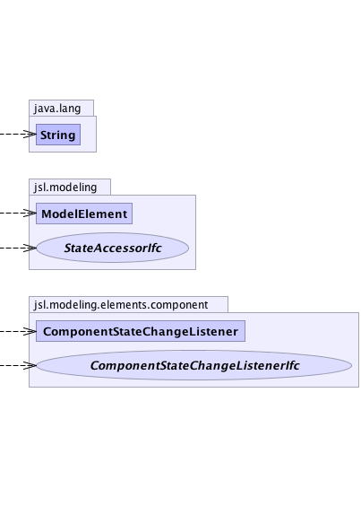

jsl.modeling.ModelElement
jsl.modeling.SchedulingElement
jsl.modeling.elements.component.Component
jsl.modeling.ModelElement
jsl.modeling.SchedulingElement
jsl.modeling.elements.component.Component
|
||||||||||
| PREV CLASS NEXT CLASS | FRAMES NO FRAMES | |||||||||
| SUMMARY: NESTED | FIELD | CONSTR | METHOD | DETAIL: FIELD | CONSTR | METHOD | |||||||||
java.lang.Object
public class Component
|  |  | |
 |
||
| Nested Class Summary | |
|---|---|
protected class |
Component.Available
|
protected class |
Component.ComponentState
|
protected class |
Component.Created
|
private class |
Component.EndOperationListener
|
private class |
Component.EndRepairListener
|
protected class |
Component.Failed
|
private class |
Component.FailureListener
|
protected class |
Component.Operating
|
protected class |
Component.Repairing
|
protected class |
Component.Unavailable
|
| Nested classes/interfaces inherited from class jsl.modeling.ModelElement |
|---|
ModelElement.TimedUpdateEventAction, ModelElement.WarmUpEventAction |
| Field Summary | |
|---|---|
private ComponentAssembly |
myAssembly
Every component may belong to a composite (assembly). |
private boolean |
myAutomaticRestartAfterOperatingFlag
Indicates whether or not the component will automatically restart operating after it completes an operation |
private boolean |
myAutomaticRestartAfterRepairFlag
Indicates whether or not the component will automatically start operating after it completes repair |
private boolean |
myAutomaticStartRepairAfterFailureFlag
Indicates whether or not the component will automatically start repair after it fails |
protected Component.ComponentState |
myAvailableState
Before being operated, the component must be placed in the activated state |
protected Component.ComponentState |
myCreatedState
The component is in the created state right after it has been constructed |
protected JSLEvent |
myEndOperationEvent
If the component has been scheduled to operate this event represents the end of the operation time |
private Component.EndOperationListener |
myEndOperationListener
Listens for the end operation event |
protected JSLEvent |
myEndRepairEvent
Represents the amount of time to repair the component |
private Component.EndRepairListener |
myEndRepairListener
Listens for the end of repair event |
protected Component.ComponentState |
myFailedState
The component can be placed in the failed state after it has been placed in the operating state |
protected JSLEvent |
myFailureEvent
If the component has been scheduled to fail this event represents the end of the time to failure |
private Component.FailureListener |
myFailureListener
Listens for the failure event |
private boolean |
myOperateAtInitializationFlag
Indicates whether or not the component will start operating at initialization, the default is false |
protected Component.ComponentState |
myOperatingState
The component can be placed in the operating state after it has been activated |
protected double |
myOperationTime
A variable representing the time associated with operating the component for the current operation |
protected RandomIfc |
myOperationTimeCDF
A distribution governing the time associated with operating the component |
protected RandomVariable |
myOperationTimeRV
A random variable representing the time associated with operating the component. |
private Component.ComponentState |
myPreviousState
Remembers the previous state of the component |
protected boolean |
myRepairedSinceLastOperatedFlag
Indicates that the component has been repaired since it was last operated |
protected Component.ComponentState |
myRepairingState
The component can be placed in the repairing state after it has failed. |
protected double |
myRepairTime
A variable representing the amount of time to repair the component for the current repair |
protected RandomIfc |
myRepairTimeCDF
Governs the RV representing the amount of time to repair the component |
protected RandomVariable |
myRepairTimeRV
A random variable representing the amount of time to repair the component |
private Component.ComponentState |
myState
Keeps track of the current state of the component |
private java.util.List<ComponentStateChangeListenerIfc> |
myStateChangeListeners
A list to hold listeners for the change of state of the component |
protected double |
myTimeToFailure
Represents the amount of time to failure when a failure event has been scheduled |
protected RandomIfc |
myTimeToFailureCDF
A CDF governing the amount of time to failure when a failure event has been scheduled |
protected RandomVariable |
myTimeToFailureRV
A random variable representing the amount of time to failure when a failure event has been scheduled |
protected Component.ComponentState |
myUnavailableState
The component can be deactivated, it can do nothing but be activated |
static int |
STATE_CHANGE
Indicates that the transporter has changed state to its observers |
| Constructor Summary | |
|---|---|
Component(ModelElement parent)
|
|
Component(ModelElement parent,
RandomIfc timeToFailureCDF,
RandomIfc operationTimeCDF,
RandomIfc repairTimeCDF)
Creates a component. |
|
Component(ModelElement parent,
RandomIfc timeToFailureCDF,
RandomIfc operationTimeCDF,
RandomIfc repairTimeCDF,
java.lang.String name)
Creates a component. |
|
Component(ModelElement parent,
RandomIfc timeToFailureCDF,
RandomIfc operationTimeCDF,
java.lang.String name)
Creates a component. |
|
Component(ModelElement parent,
RandomIfc timeToFailureCDF,
java.lang.String name)
Creates a component. |
|
Component(ModelElement parent,
java.lang.String name)
Creates a component. |
|
| Method Summary | |
|---|---|
void |
activate()
Tells the component to activate |
void |
attachStateChangeListener(ComponentStateChangeListener listener)
Attaches a component state change listener to the component |
protected void |
beforeReplication()
Required initialization actions occur in this method. |
boolean |
containsStateChangeListener(ComponentStateChangeListenerIfc listener)
Checks if the listener has already been attached to the component |
void |
deactivate()
Tells the component to deactivate. |
void |
endOperation()
Can be used to directly end an on-going operation. |
protected void |
endOperationAction()
This method is called right after the component enters the activated state, i.e. transitioning from operating to activated. |
void |
endRepair()
Can be used to directly end an on-going repair. |
protected void |
endRepairAction()
This method is called right after the component enters the activated state after being repaired, i.e. transitioning from repairing to activated The component will be in the activated state within this method. |
void |
fail()
Tells the component to immediately fail. |
protected void |
failureAction()
This method is called right after the component enters the failed state, i.e. transitioning from operating to failed. |
StateAccessorIfc |
getActivatedState()
|
ComponentAssembly |
getAssembly()
If the component belongs to a composite (assembly) then this method will return the assembly. |
StateAccessorIfc |
getComponentState()
Returns the current state of the component |
StateAccessorIfc |
getCreatedState()
|
StateAccessorIfc |
getDeactivatedState()
|
StateAccessorIfc |
getFailedState()
|
protected double |
getNextOperationTime()
Gets the next operation time for the component. |
protected double |
getNextRepairTime()
Gets the next time to complete repair for the component. |
protected double |
getNextTimeToFailure()
Gets the next time to failure for the component. |
StateAccessorIfc |
getOperatingState()
|
double |
getOperationTime()
Gets the current operation time for the component. |
StateAccessorIfc |
getPreviousComponentState()
Returns the previous state of the component |
StateAccessorIfc |
getRepairingState()
|
protected double |
getTimeRemainingUntilNextFailure()
Returns the time remaining until the next failure. |
protected void |
initialize()
Can be used to initialize the component after beforeReplication() is called. |
boolean |
isAutomaticRestartAfterOperatingFlagOn()
Indicates whether or not the component will automatically restart operating after completing an operation |
boolean |
isAutomaticRestartAfterRepairFlagOn()
Indicates whether or not the component will automatically start operating after completing repair. |
boolean |
isAutomaticStartRepairAfterFailureFlagOn()
Indicates whether or not the component will automatically start repair after failing. |
boolean |
isAvailable()
Returns true if the component is in the activated state |
boolean |
isCreated()
Returns true if the component is in the created state |
boolean |
isEndOfOperationPending()
Returns true if the component has an end of operation event scheduled |
boolean |
isEndOfRepairPending()
Returns true if the component has an end of repair event scheduled |
boolean |
isFailed()
Returns true if the component is in the failed state |
boolean |
isFailurePending()
Returns true if the component has a failure event scheduled |
boolean |
isInRepair()
Returns true if the component is in the being repaired state |
boolean |
isOperateAtInitializationFlagOn()
True indicates that the component will automatically be scheduled to start operating when it is initialized |
boolean |
isOperating()
Returns true if the component is in the operating state |
boolean |
isPreviousState(StateAccessorIfc state)
Returns true if the component is in the supplied state |
boolean |
isState(StateAccessorIfc state)
Returns true if the component is in the supplied state |
boolean |
isUnavailable()
Returns true if the component is in the deactivated state |
private void |
notifyStateChangeListeners()
Used internally to notify any state change listeners of a state change |
boolean |
removeStateChangeListener(ComponentStateChangeListenerIfc listener)
Removes an attached component state change listener from the component |
void |
scheduleOperation()
Schedules the component to operate using the operating time distribution |
void |
scheduleOperation(double operationTime)
Schedules the component to operate for the supplied time period |
void |
scheduleRepair()
Schedules the component to undergo repair for the time specified by its repair time distribution |
void |
scheduleRepair(double repairTime)
Schedules the component to undergo repair for the supplied time period |
protected void |
setAssembly(ComponentAssembly assembly)
This method is used by ComponentAssembly to set the component's assembly. |
void |
setAutomaticRestartAfterOperatingFlag(boolean flag)
Indicates whether or not the component will automatically restart operating after completing an operation. |
void |
setAutomaticRestartAfterRepairFlag(boolean flag)
Indicates whether or not the component will automatically start operating after completing repair. |
void |
setAutomaticStartRepairAfterFailureFlag(boolean flag)
Indicates whether or not the component will automatically start repair after failing. |
void |
setOperateAtInitializationFlag(boolean flag)
True indicates that the component will automatically be scheduled to start operating when it is initialized. |
void |
setOperationTimeCDFInitialRandomSource(RandomIfc distribution)
Sets the operation time distribution for the component |
void |
setRepairTimeCDFInitialRandomSource(RandomIfc distribution)
Sets the repair time distribution for the component |
protected void |
setState(Component.ComponentState state)
Sets the state of the component, updates previous and current states, notifies state change listeners of the state change, and notifies any observers of the state change. |
void |
setTimeToFailureCDFInitialRandomSource(RandomIfc distribution)
Sets the time to failure distribution for the component |
void |
startOperation()
Tells the component to immediately start operating. |
void |
startOperation(double operationTime)
Tells the component to immediately start operating. |
void |
startRepair()
Tells the component to immediately start repair. |
protected void |
updateTimeRemainingUntilNextFailure(double operationTime)
After an operation ends this method is called to allow the time to failure to be updated. |
| Methods inherited from class java.lang.Object |
|---|
clone, equals, finalize, getClass, hashCode, notify, notifyAll, wait, wait, wait |
| Field Detail |
|---|
public static final int STATE_CHANGE
protected double myOperationTime
protected RandomVariable myOperationTimeRV
protected RandomIfc myOperationTimeCDF
protected JSLEvent myEndOperationEvent
private Component.EndOperationListener myEndOperationListener
protected double myTimeToFailure
protected RandomVariable myTimeToFailureRV
protected RandomIfc myTimeToFailureCDF
protected JSLEvent myFailureEvent
private Component.FailureListener myFailureListener
protected double myRepairTime
protected RandomVariable myRepairTimeRV
protected RandomIfc myRepairTimeCDF
protected JSLEvent myEndRepairEvent
protected boolean myRepairedSinceLastOperatedFlag
private Component.EndRepairListener myEndRepairListener
private Component.ComponentState myState
private Component.ComponentState myPreviousState
protected Component.ComponentState myCreatedState
protected Component.ComponentState myAvailableState
protected Component.ComponentState myUnavailableState
protected Component.ComponentState myFailedState
protected Component.ComponentState myOperatingState
protected Component.ComponentState myRepairingState
private boolean myOperateAtInitializationFlag
private boolean myAutomaticRestartAfterOperatingFlag
private boolean myAutomaticStartRepairAfterFailureFlag
private boolean myAutomaticRestartAfterRepairFlag
private java.util.List<ComponentStateChangeListenerIfc> myStateChangeListeners
private ComponentAssembly myAssembly
| Constructor Detail |
|---|
public Component(ModelElement parent)
public Component(ModelElement parent,
java.lang.String name)
parent - The model element serving as the parentname - The name of the component
public Component(ModelElement parent,
RandomIfc timeToFailureCDF,
java.lang.String name)
parent - The model element serving as the parenttimeToFailureCDF - The time to failure CDFname - The name of the component
public Component(ModelElement parent,
RandomIfc timeToFailureCDF,
RandomIfc operationTimeCDF,
java.lang.String name)
parent - The model element serving as the parenttimeToFailureCDF - The time to failure CDFoperationTimeCDF - The operation time CDFname - The name of the component
public Component(ModelElement parent,
RandomIfc timeToFailureCDF,
RandomIfc operationTimeCDF,
RandomIfc repairTimeCDF)
parent - The model element serving as the parenttimeToFailureCDF - The time to failure CDFoperationTimeCDF - The operation time CDFrepairTimeCDF - The repair time CDF
public Component(ModelElement parent,
RandomIfc timeToFailureCDF,
RandomIfc operationTimeCDF,
RandomIfc repairTimeCDF,
java.lang.String name)
parent - The model element serving as the parenttimeToFailureCDF - The time to failure CDFoperationTimeCDF - The operation time CDFrepairTimeCDF - The repair time CDFname - The name of the component| Method Detail |
|---|
public final void attachStateChangeListener(ComponentStateChangeListener listener)
listener - The listener to be attached, must be non-null and not already attachedpublic final boolean removeStateChangeListener(ComponentStateChangeListenerIfc listener)
listener, - Must not be null
public final boolean containsStateChangeListener(ComponentStateChangeListenerIfc listener)
listener, - must not be null
public final boolean isCreated()
public final boolean isAvailable()
public final boolean isUnavailable()
public final boolean isFailed()
public final boolean isOperating()
public final boolean isInRepair()
public final boolean isFailurePending()
public final boolean isEndOfOperationPending()
public final boolean isEndOfRepairPending()
public final StateAccessorIfc getComponentState()
public final StateAccessorIfc getPreviousComponentState()
public final boolean isState(StateAccessorIfc state)
state -
public final boolean isPreviousState(StateAccessorIfc state)
state -
public final StateAccessorIfc getActivatedState()
public final StateAccessorIfc getCreatedState()
public final StateAccessorIfc getDeactivatedState()
public final StateAccessorIfc getFailedState()
public final StateAccessorIfc getOperatingState()
public final StateAccessorIfc getRepairingState()
public final void setTimeToFailureCDFInitialRandomSource(RandomIfc distribution)
distribution, - must not be nullpublic final void setOperationTimeCDFInitialRandomSource(RandomIfc distribution)
distribution, - must not be nullpublic final void setRepairTimeCDFInitialRandomSource(RandomIfc distribution)
distribution, - must not be nullpublic final boolean isOperateAtInitializationFlagOn()
public final void setOperateAtInitializationFlag(boolean flag)
flag - The operateAtInitializationFlag to set.public final boolean isAutomaticRestartAfterOperatingFlagOn()
public final void setAutomaticRestartAfterOperatingFlag(boolean flag)
flag - The automaticRestartAfterOperatingFlag to set.public final boolean isAutomaticRestartAfterRepairFlagOn()
public final void setAutomaticRestartAfterRepairFlag(boolean flag)
flag - The automaticRestartAfterRepairFlag to set.public final boolean isAutomaticStartRepairAfterFailureFlagOn()
public final void setAutomaticStartRepairAfterFailureFlag(boolean flag)
flag - The automaticStartRepairAfterFailureFlag to set.public final ComponentAssembly getAssembly()
protected final void setAssembly(ComponentAssembly assembly)
assembly - The assembly to set.public final void startOperation()
public final void startOperation(double operationTime)
operationTime - public final void scheduleOperation()
public final void scheduleOperation(double operationTime)
operationTime, - must be > 0.0public final double getOperationTime()
public final void endOperation()
public final void startRepair()
public final void scheduleRepair()
repairTime - public final void scheduleRepair(double repairTime)
repairTime, - must be > 0.0public final void endRepair()
public final void activate()
public final void deactivate()
public final void fail()
protected double getTimeRemainingUntilNextFailure()
protected void updateTimeRemainingUntilNextFailure(double operationTime)
operationTime - protected double getNextOperationTime()
protected double getNextTimeToFailure()
protected double getNextRepairTime()
protected void endOperationAction()
protected void failureAction()
protected void endRepairAction()
protected void beforeReplication()
beforeReplication in class ModelElementprotected void initialize()
initialize in class ModelElementprotected final void setState(Component.ComponentState state)
state - private final void notifyStateChangeListeners()
|
||||||||||
| PREV CLASS NEXT CLASS | FRAMES NO FRAMES | |||||||||
| SUMMARY: NESTED | FIELD | CONSTR | METHOD | DETAIL: FIELD | CONSTR | METHOD | |||||||||